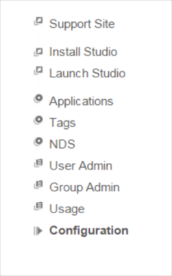
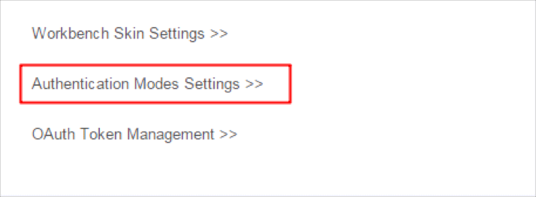
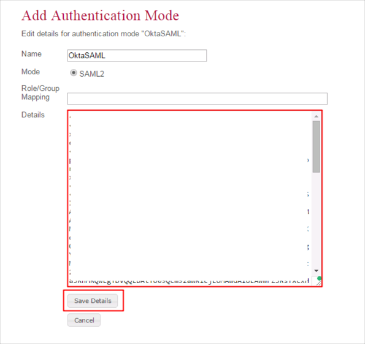
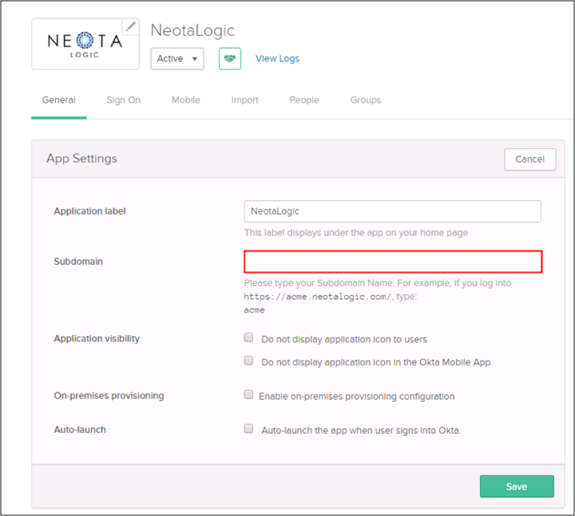

Login to your Neotalogic account as an administrator at https://[your-neotalogic-subdomain].neotalogic.com/wb.
Navigate to Configuration.

Scroll down the page and click on Authentication Modes Settings.

Click on Add Authentication Mode, then enter the following (see screen shot at the end of step for reference):
Details: Copy and paste the following IDP Metadata:
Sign in to Okta Admin app to have this variable generated for you.
Click Save Details.

In Okta, select the General tab for the Neotalogic app, then click Edit.
Enter the Subdomain provided to you by Neotalogic ([your-neotalogic-subdomain] into the Subdomain field.
Click Save.

Done!
Notes:
IDP-initiated flows, SP-initiated flows, and Just In Time (JIT) provisioning are all supported.
Go to https://[your-neotalogic-subdomain].neotalogic.com/wb.